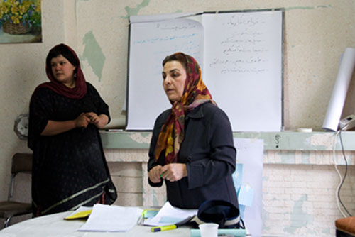

پذيرش > تریبون > گفت و گو > ناهید جعفری: در کارگاه های خشونت زنان تابوی سکوت را می شکنند


 ناهید جعفری: در کارگاه های خشونت زنان تابوی سکوت را می شکنند ناهید جعفری: در کارگاه های خشونت زنان تابوی سکوت را می شکنند
18 آذر 1388 - گفتگو: الناز انصاری و دلارام علی - نسخه قابل چاپ
حدود یک دهه است که از خشونت حرف می زند، کارگاه برگزار می کند، تئاتر اجرا می کند، و همچنان مصمم به کارش ادامه می دهد. بیش از آن که جویای نام باشد دغدغه کار دارد. ممکن است برخی از فعالان حقوق زنان او را هنوز نشناسند اما برای شرکت کنندگان در کارگاه های خشونت، و برای بسیاری از فعالان کمپین نامی آشناست. گریز از خشونت و احترام به حقوق برابر چه در حرف و عمل از ویژگی های اوست.با ناهید جعفری از اعضای اولیه مرکز فرهنگی زنان و فعال کمپین یک میلیون امضا به گفتگو نشسته ایم:
کار در زمینه زنان را از کجا شروع کردید و چه انگیزه ای شما را به موضوع خشونت علیه زنان حساس کرد؟
از وقتی با مرکز فرهنگی زنان آشنا شدم.
یعنی دغدغه هایی داشتم و برایم جالب بود که با جاهایی کار کنم که درباره مسائل مختلف زنان کار می کنند. در 16 آذر سال 81 به جمع بچه های مرکز فرهنگی پیوستم. تا آنجا که به یاد می آورم با واژه ی "ورک شاپ" ، کارگاه و کارگاه خشونت در مرکز آشنا شدم. و یکی از انگیزه هایم به کار در کارگاه خشونت شاید این بود که دوستان و بعضی از اطرافیانم را دیده بودم که به انحاء مختلف مورد خشونت قرار می گیرند.
پیش از اینکه وارد ان جی او مرکز فرهنگی زنان شوید، درباره خشونت چطور فکر می کردید. می خواهم بدانم پیش از اینکه آمارها را ببینید یا در بحث های جمعی درباره خشونت شرکت کنید، چطور به موضوع خشونت نگاه می کردید؟
آن زمان وقتی خشونت های جاری در اطرافم را می دیدم، فکر می کردم چرا ما زنان در این باره حرف نمی زنیم. وقتی با هم هستیم درباره هر چیزی حرف می زنیم، ولی در این باره که همه زندگی ما را تحت الشعاع قرار می دهد حرف نمی زنیم.حتی وقتی حرف می زنیم بازهم زنان را مقصر می دانیم، مثل حرف زدن درباره خشونت های روانی که از طرف مادرشوهر وخواهر شوهر ... اعمال می شود.
بنابراین چنین دغدغه و پرسشی همیشه در ذهنم بود که چرا ما زنان درباره این مسائل حرف نمی زنیم. این که چرا مثلا وقتی دختر عمه ام مورد خشونت واقع می شود نمی آید با من حرف بزند یا من چرا نمی آیم بهش بگویم که من درگیر چه مشکلاتی هستم که بتوانیم از تجربه های هم استفاده کنیم. همیشه فکر می کردم خصوصی دانستن مسئله خشونت خیلی به ضرر زنان است. چون وقتی حرفی از این مشکلات نمی زنی همیشه فکر می کنی که این تو هستی که این مشکلات را داری و هیچوقت فکر نمی کنی که دیگران هم با تو همدرد هستند و فکر می کنی مشکل تو از همه بزرگ تر است. ولی در این سالها که این کارگاه ها را گذاشتیم عمیقا به این اعتقاد رسیدم که تا وقتی ما زنان مشکلاتمان را از ذهن خودمان بیرون نیاوریم و درباره اش حرف نزنیم و مشکل را از حوزه خصوصی به حوزه عمومی نکشانیم، از حل مسائلمان از جمله از مسئله خشونت علیه زنان خیلی عقب می مانیم.
چطور شد که به فکر برگزاری کارگاه های آموزشی مقابله با خشونت برای زنان افتادید؟
همان طور که قبلا گفتم با کارگاه و شیوه کار "کارگاهی" در مرکز آشنا شدم. دیگران را نمی دانم. جلسه ای بود که در آن خانم پروشات شکرلو از سازمان زنان خاورمیانه که تجربه کار با زنان رنگین پوست خشونت دیده در آمریکا را داشت در هماهنگی با مرکز فرهنگی زنان در کارگاهی در تاریخ 12 دیماه سال 81 در آمفی تأتر شهرداری منطقه 6 تهران، تعاریف خشونت، خشونتگر و خشونت دیده را برایمان گفت واز تجربیات خودش گفت و بعد از آن هم یادم هست خانم رشدیه در محل انجمن حمایت از آسیب دیدگان اجتماعی یک کارگاهی گذاشت که در واقع چگونگی برگزاری کارگاه و اداره کردن آن و تسهیلگری را آموزش داد و تاریخچه ای از روش کار کارگاهی را گفت که تکمیل کننده ی همان روش آشنایی در کارگاه بود.
آیا می توانیم بگوییم مرکز فرهنگی از اولین مجریان کارگاه های آموزشی برای زنان بود؟
احتمالا برگزاری اینطور برنامه ها در گروه های دیگرهم بوده اما من خبر نداشتم. اما بطور قطع میتوانم بگویم که کارگاههایی که مرکز می گذاشت هم تعداد شرکت کننده هایش زیاد بودند و هم تعداد کارگاه های خشونت. و البته همواره در روند برگزاری کارگاهها خود ما هم خیلی یاد می گرفتیم و تجربه می کردیم چون شیوه ای که می خواستیم کار کنیم شیوه آزموده شده ای نبود حداقل برای من.
گروه اولیه برگزار کننده کارگاه چه کسانی بودند؟
از سال 81 اعضای مرکز فرهنگی زنان به چند گروه یا کمیته سه یا چهارنفره تقسیم شدیم که هر کمیته وظایفی به عهده گرفت. یکی از این کمیته ها، کمیته برگزار کننده سمینارها، سخنرانیها، و کارگاهها بود که نوشین احمدی خراسانی، ناهید کشاورز، طلعت تقی نیا و من عضو این گروه شدیم. و در روند کار گروهی تسهیلگری کارگاهها را از هم یادگرفتیم و به هم یاد دادیم.

اولین کارگاه را به خاطر می آورید که کی برگزار کردید و تقریبا چند کارگاه گذاشتید و به چه موضوعاتی پرداختید؟
اولین کارگاه همان بود که در بالا توضیح دادم. افراد شرکت کننده از طرف مرکز دعوت شده بودند و تمام سالن آمفی تأتر پر بود از زنانی که دوست داشتند راجع به خشونت بدانند یا بنویسند یا خودشان مورد خشونت قرار گرفته بودند. تعریف خشونت و انواع آن عمده ترین موضوعات آن کارگاه بود به طوری که در آخر همان کارگاه زنی با چشمان گریان گفت مثل اینکه درد من درد خیلی هاست.
دومین کارگاه با موضوع "خشونت خانگی و مسئولیت فردی" 16 اسفند 81 در ساختمان ورشو با 3 گروه 25 نفری از رده های مختلف اجتماعی و سنی برگزار شد.
از اوایل سال 1382 جلسات متعددی در فرهنگسرای بانو غیر از مرکز با ان. جی. او ها (هستیا اندیش، موسسه رشدیه، انجمن ایرانمهر، سایت زنان ایران و ...) و افرادی که در حوزه های مختلف اجتماعی و زنان کار می کردند مثل پردیس قندهاری، دلارام علی، سونا محسنی، نازنین کیانی فر، پروین بختیارنژاد، پروانه قاسمیان، و خیلی های دیگر که حضور ذهن ندارم راجع به خشونت داشتیم که منجر به برگزاری کارگاه 3 روزه ی خشونت جنسی شد. این کارگاهها در 4 و 11 و 18 شهریور سال 82 در پارک نظامی گنجوی با حضور بیش از 100 شرکت کننده برگزار شد و نتیجه اش هم فراخوان "کمپین زنان و مردان علیه خشونت تا 8 مارس" بود. این کارگاه سه نوبته تجربه بسیار ارزنده ای بود برای من بخصوص که از افرادی مثل خانم دکتر رسولیان دعوت شده بود که در رابطه با روانشناسی خشونت جنسی صحبت کنند. نتیجه ی خیلی خوبی هم داشت. تعداد خیلی زیادی از مردان و زنان هم طومار حمایت از این فراخوان را امضا کردند. در 24 و 25 آذر ماه سال 83 کارگاه خشونت با شرکت کنندگانی از شهرستان یزد برگزار کردیم. سوم دی ماه 83 در دانشکده ادبیات دانشگاه تهران با همکاری انجمن اسلامی آن دانشکده برگزار کردیم. کارگاه خشونت جنسی یا آزارهای جنسی در محیط کار را داشتیم. در سرای ژیمناستیک در بهمن 84 و اردیبهشت 85 کارگاه خشونت گذاشتیم. در دانشکده علوم اجتماعی دانشگاه تهران کارگاه داشتیم و در کنار این کارگاه یک نمایشگاه خیلی کوچکی را ساخته بودیم که نمادهای خشونت را نمایش میداد.
ولی بعد از شروع به کار کمیپین فعالیت مرکز محدود شد، تمام توانمان را روی کمپین متمرکز کردیم وقفه ای در برگزاری کارگاههای خشونت افتاد که البته به نظرم طبیعی بود چون کار چهره به چهره خیلی زمانبر و در عین حال لذت بخش بود. بعد از چند ماه دوباره برگزاری کارگاههای خشونت را از سر گرفتیم در خانه کودک سرچشمه و در مرکز کردهای مقیم تهران کارگاه خشونت گذاشتیم و در شهرهای سنندج و رشت هم کارگاه خشونت داشتیم که کشیده شدن این کارگاهها به شهرستانها هم تجربه خیلی زیادی را به همراه داشت .
مختصری را جع به فراخوان "کمپین زنان و مردان علیه خشونت تا 8 مارس"بگویید
فراخوان مذکور شامل 6 کمیته بود و از همه افراد و انجمن ها و ان. جی. او ها خواسته بود که در کنار یکدیگر و به تدریج و با اجرای پروژه های کوچک در راستای عمومی کردن مسئله خشونت علیه زنان بکوشند و برای کاهش خشونت علیه زنان مبارزه کنند. این 6 کمیته عبارت بودند از: 1. کمیته امضاء به مجلس، قوه قضائیه و مراجع قانونی برای تغییر قوانین. 2. کمیته جمع آوری مدارک و گزارش های مستند مربوط به خشونت علیه زنان. 3. کمیته هنری علیه خشونت. 4. کمیته آموزش به مردان و زنان علیه خشونت بر زنان. 5. کمیته تهیه و پخش جزوات آموزشی برای دختران و پسران. 6. کمیته خشونت خیابانی. هر کدام از این کمیته ها با همکاری افراد و انجمن هایی که اعلام آمادگی کرده بودند وظایفی را به عهده گرفتند.
از چه طریقی مخاطبانتان را جذب می کردید و چه کسانی می آمدند؟
ابتدا می خواهم درباره مخاطب این را بگویم که مخاطب ما برای خشونت فقط آدم هایی نیستند که فقیرند و جنوب شهر زندگی می کنند. از آنجایی که موضوع خشونت علیه زنان اصلا طبقاتی نیست مخاطبان هم از قشرهای مختلف مردم و از طبقات مختلف اجتماعی اند. حتی زنانی از گروه زنان روشنفکر هم مورد خشونت قرار می گیرند. منتها اشکال آن فرق دارد، همانطور که در شهرها یا کشورهای مختلف اشکال خشونت فرق می کند. ما هم بر همین اساس تصمیم گرفتیم با زنان جامعه مان به روش کارگاهی بر روی مسئله خشونت کار کنیم. درست است که مخاطبان ما در سمینارها یا سخنرانیها بیشتر زنان طبقه متوسط هستند ولی چه برای آنها چه برای زنان دیگر به نظر من در تاثیرگذاری هیچ روشی به اندازه کارگاه مفید نیست. در واقع مخاطبان ما را زنان کارگر، کارمند، پرستار، دانشجو و خانه دار تشکیل می دهند و البته کمی هم بستگی دارد به محلی که در آنجا کارگاه برگزار می شود. متاسفانه از وقتی که موضوع زنان را به یک موضوع امنیتی تبدیل کرده اند دست ما برای برگزاری کارگاهها بسته تر شده به طوری که دیگر نمی توانیم یعنی نمی گذارند از امکانات شهری که مال خود شهروندان است مثل فرهنگسراها، پارکها و حتی ساختمان سازمانهای غیردولتی ورشو که قاعدتأ باید اختصاص داده شود به جلسات و کارگاههایی که این سازمانها دارند، استفاده کنیم به طور کلی از هر طیف و سنی هم شرکت کننده داشتیم ولی همیشه تعداد دانشجویان بیشتر بود. مثلا در آن کارگاه 3 نوبته بیش از 100 نفر آموزش دیدند و هیچ مشکل امنیتی هم مثل حالا برای کسی پیش نیامد.
تا جایی که یادم است آن زمان همکاری هایی هم در راستای خشونت خانگی با فعالان حقوق کودکان داشتید. این تجربه با توجه به تفاوت مخاطب چه فرقی با تجربه های دیگرتان داشت؟
در مورد همکاری باید بگویم که همیشه این همکاری ها وجود داشته. یعنی برگزاری کارگاههای خشونت یا به درخواست کسی یا جایی بوده و یا دعوت کردیم از افرادی برای شرکت در این کارگاهها. مثلا انجمن های اسلامی دانشکده ها، کمیته زنان ان. جی. او ها و یا طرق دیگر. از آنجایی که بعد از افتتاح "خانه کودک ناصرخسرو" بطور غیر مستقیم در جریان کارهای آنجا قرار می گرفتم و علاقه دارم که با این کانون ها همکاری داشته باشم، با "کانون فرهنگی حمایتی" آشنا شدم و برای مادران بچه های تحت حمایت "این ان جی او"ها تدارک برگزاری یک کارگاه خشونت را دیدیم. تفاوت این کارگاه از نظر کیفیت برگزاری از این جهت بود که زنانی که آمده بودند تحصیلات خیلی کمی داشتند. دو سه نفر دیپلمه بودند و بقیه یا بی سواد بودند و یا کم سواد. ما نمی توانستیم مثل کارگاه های دیگر فلیپ چارت بگذاریم یا از امکانات دیگری که به خواندن نیاز دارد استفاده کنیم، در نتیجه بیشتر با زنان حرف زدیم که خب تفاوت عمده اش به لحاظ شکلی با دیگر کارگاه هادر این بود. برای آنها هم جالب بود که من از خودم شروع کردم و اول از تجربه های خودم حرف زدم. برای من هم از این جهت جالب بود که این زنان اعتماد کردند و خیلی راحت و بدون خودسانسوری از تجربه هایشان حرف زدند و برای پیدا کردن راهکارها مشارکت می کردند.

یکی از ویژگی های کار شما در کارگاه خشونت اجرای تئاتر هم هست یعنی یک جور ایجاد ارتباط بین هنرو مسائل اجتماعی، ممکن است دراین باره توضیح بدهید.
یکی از کارهایی که در اغلب کارگاههای خشونت انجام می دادم، اجرای یک مونولوگ یا یک حرکت نمایشی و تأترگونه بود که خیلی مورد توجه قرار می گرفت. بعد از برگزاری اولین کارگاه ها تصمیم گرفتم از این کار هم برای انتقال مفهوم استفاده کنم. معمولا در دقایق پایانی کارگاه یک اپیزود کوتاه از زندگی یک زن خشونت دیده یا روزمرگی یک زن یا تبعیضاتی که قانون بر زنان تحمیل کرده را اجرا می کنم. در این کارگاه ها جالب است که زنان به شدت از این نمایش کوتاه تاثیر می گیرند.
بعد از شروع کار کمپین هم این نمایش ها که تاثیر قوانین تبعیض آمیز را در زندگی روزمره زنان نشان می دهد و باعث بروز انواع خشونت بر زنان می شود را ادامه دادم، در تئاترهای خیابانی هم که موضوع خشونت و قوانین مطرح بود گاه شرکت داشتم. اگر اشتباه نکنم هفته سلامت بود و تلاشگران سلامت غرفه ای در پارک ملت گذاشته بودند و چون موضوع کارشان به خشونت مربوط می شد از ما خواستند که یکی از اپیزودها را اجرا کنیم ، موقعیت مناسب بود برای اجرای تأتر و ما هم نمایشی با موضوع حق حضانت که یکی از قوانینی است که باعث می شود زنان برای از دست ندادن فرزندشان خشونت خانگی را تحمل کنند اجرا کردیم. یا اجرایی که در پارک ساعی با موضوع تعدد زوجات داشتیم بدون اغراق نزدیک به 300 نفر درگیر موضوع شدند و تا چند ساعت بعد بحث حق طلاق و تعدد زوجات بین حاضرین در پارک ادامه داشت.
به طور مشخص می توانم بگویم در کارگاه کانون فرهنگی حمایتی کودکان و مکانهایی نظیر آنجا به غیر از حرف زدن، نمایش هم می تواند خلا سواد خواندن را در آن کارگاهها برطرف کند.
بعد از کمپین که کار مرکز خیلی کمتر شد و شما هم در کمپین فعال شدید چه اتفاقی برای این کارگاه ها افتاد؟
همانطور که گفتم تولد کمپین باعث شد که خیلی از کارهایی که قبلا می کردیم را برای مدتی نتوانیم انجام بدهیم اما نه برای همیشه. بعد از کارگاه خشونتی که در سرای ژیمناستیک داشتیم در واقع همکاری گروه اولیه برگزاری کارگاهها با یکدیگر قطع شد. البته در کنار اینها فشار امنیتی بر مرکز بیشتر شد که با بازداشت سه نفر از اعضای مرکز و ضبط اسناد و مدارک مرکز هم همراه بود. خلاصه این که برای مدتی از کارگاههای خشونت خبری نبود ولی بعد از چند ماه با گروه جدیدی دوباره شروع به برگزاری کارگاه خشونت کردیم . ناگفته نماند که فضای امنیتی و فشارهای شدید امنیتی که به جنبش زنان وارد شد بی تأثیر نبود در نتیجه فکر کردیم اگر کارگاههای خشونت را در آخر کارگاههای حقوقی کمپین بگذاریم بد نباشد که البته خیلی ادامه پیدا نکرد چون خود کارگاه حقوقی حداقل 4 ساعت زمان لازم دارد و اگر بخواهیم این کارگاه را هم اضافه کنیم از حوصله خارج خواهد شد در نتیجه تصمیم گرفتیم با تمام فشارها و نامناسب بودن شرایط امنیتی هرجا اشتیاق و امکان برگزاری کارگاه چه از سوی ما و چه از سوی داوطلبان بوده است کارگاه برگزار کنیم،خیلی از کارگاه های خشونت را هم مانند کارگاه های کمپین در خانه ها برگزارکردیم. در حال حاضر هم با توجه به استقبال شهرستان ها در سایه همکاری مشترک، کارگاه هایی در شهرها هم برگزار کرده ایم و خواهیم کرد و در حال حاضر کارگاه های مستقل یا ادغام شده زیادی داریم.
شما سال هاست کارگاه های خشونت برگزار می کنید. در این مدت کارگاه ها چه سیر تحولی را طی کرده است؟
به هر حال هر چیزی در اثر تکرار پیشرفت می کند و به روز می شود. در واقع به تعداد شرکت کننده های هر کارگاه سندی به اسناد خشونت اضافه می شود و اطلاعات ما راجع به خشونت بیشتر می شود، با مطالعه کتب و مقالاتی که راجع به خشونت نوشته شده و با مشاهده و مصاحبه با زنان خشونت دیده و جمع آوری این مدارک امیدواریم که بتوانیم کارگاههای پربارتری داشته باشیم. در کل هم سیر تکاملی داشته و هم تحولی در نحوه برگزاری ایجاد شده مثلا از دل همین کارگاههای خشونت کارگاه دیگری بیرون آمد که خانم مرعشی برگزار می کرد به نام کارگاه نوشتن. در واقع خانم مرعشی برای افراد خشونت دیده این کارگاهها را می گذاشت که آنها تجربیات خودشان را بنویسند. و اما در نحوه برگزاری هم تفاوتهایی بعد از مطرح شدن کمپین یک میلیون امضا رخ داده است، کیفیت کارگاه ها به مراتب بالاتر رفته است به این دلیل که ما آن زمان خیلی روی مسائل و خشونت های قانونی متمرکز نبودیم. اما می بینیم که حتی در خشونت های خانگی کوچک ترین مسائلی که پیش می آید و منجر به خشونت می شود، ریشه در قانون هم دارد. این خشونت ها به یکی از این قوانین ربط پیدا می کند که کمپین خواستار تغییر آن است. به حضانت، به حق سرپرستی خانوار و ... این تبعیض های قانونی است که در تولید و بازتولید خشونت نقش بازی می کند.
این تحولات به خاطر توجه شما به ریشه های قانونی خشونت است یا این تغییر نگاه در مخاطبان شما ایجاد شده است؟
نمی توانم با قاطعیت بگویم کدام یک تاثیر داشته. هر دو بودند وقتی کمپین و مشکلات قانونی مطرح می شود و در تمام لایه های جامعه می رود و از یک روش خیلی نویی هم استفاده می کند که کار چهره به چهره است، هم دغدغه ها و اطلاعات زنان و هم حساسیتشان نسبت به این تبعیض های قانونی بیشتر می شود و هم برای من به عنوان یک تسهیلگر راحت تر است که راجع به تبعیض های قانونی حرف بزنم. به نظرم یکی از بزرگترین دستاوردهای کمپین، تغییر نگاه مخاطبان ماست که دیگر خشونت را تحمل نکنند.
فکر می کنید تغییر و اصلاح قوانین چه تاثیری در روی این موضوع بگذارد؟
خب خشونت منحصر به ما یا چند کشور نیست. در دموکراتیک ترین حکومت ها هم خشونت در اشکال مختلفش علیه زنان وجود دارد. اما در این کشورها چقدر قانون نقش بازدارندگی دارد این مهم است. مثلا در هندوستان دختر را می کشند چون جهاز نیاورده است و این در حالی است که در هندوستان قوانین خیلی دموکراتیکی وجود دارد.
در ایران از این جهت وضع زنان فرق دارد که هم قانون علیه زنان تبعیض آمیز است و هم خشونت هایی بر زنان اعمال می شود که ریشه و توجیه سنتی دارند. دقیقا هم همین ریشه های سنتی و فرهنگی است که زمان و انرژی زیادی برای تغییر می خواهند. ما در زمینه فرهنگی در مواردی بسیار پیش تراز قانون و در جاهایی کمی عقب تر از قانون هستیم.

شما به حرف های زنان زیادی گوش داده اید که از تجربه های خشونت خود حرف می زدند این حرف ها چه تاثیری در نگاه شما به پدیده خشونت علیه زنان گذاشته است؟
یکی از کارگاه هایی که خیلی ما را متاثر کرد و تا یک ماه بعد آنچه شنیده بودیم مدام در ذهنمان تکرار می شد کارگاهی بود که نزدیک به یک سال پیش در خانه کارگر سنندج با همکاری خانم مریم زندی داشتیم. واقعا حرف های دو سه نفری که از تجربه شان گفتند تکان دهنده بود. البته از قبل می دانستم که در کردستان محرومیت های زیادی وجود دارد و یا خشونت هایی علیه زنان اعمال می شود که کمتر با این شدت در تهران رخ می دهد. ولی انتظار اعمال چنین خشونت هایی را نداشتم. مثلا یک نمونه اش دختر خیلی جوانی بود که صورتش را نشان داد که به خاطر اینکه رابطه جنسی چند باره در یک شب داشته باشد شوهرش صورت او را با سیگار سوزانده بود. این کارگاه یک نمونه از کارگاه هایی بود که خیلی برای من سخت بود. اما مهم ترین تاثیر این کار این بود که با هر کارگاه به ادامه این کار مصمم تر از پیش می شوم.
اشاره کردید موضوع خشونت علیه زنان طبقاتی نیست. می توانید در این باره بیشتر توضیح دهید یا نمونه هایی ارائه کنید؟
من معتقدم خشونت طبقاتی نیست ولی نمی گویم فقر هیچ نقشی در بروز خشونت ندارد. زنی که به واسطه فقر درگیر خشونت می شود تحت دو نوع خشونت است که یکی به واسطه فقر است و دیگری خشونتی است که از طرف مردی به او تحمیل می شود که هر چند خود او تحت ستم یا خشونت اقتصادی است اما قدرت بیشتری نسبت به زن دارد و اختیار اعمال قدرت دارد.یعنی خشونت برزن طبقه پایین جامعه مضاعف می شود. ممکن است میزان خشونتی که بر زن فقیر نسبت به زن طبقه متوسط اعمال می شود فرق داشته باشد و حتی بیشتر باشد اما به این معنی نیست که زن طبقه متوسط هیچ وقت مورد خشونت خانگی قرار نمی گیرد. من فکر می کنم خشونت روانی را لااقل همه زنان در هر طبقه ای باشند تجربه کرده اند. این خشونت ها در طبقات بالای جامعه نیز رخ می دهند که ممکن است هم مدلش فرق داشته باشد و هم شاید تعدادش کمتر باشد. اما واقعیت این است که مثلا زنی که همسر یک نویسنده است، یا همسر یک پزشک است و یا همسر صاحب منصبان ضد زن است یا حتی خودش پزشک و معلم یا تحصیل کرده یا شاغل وغیره هست و پیش خودش شان اجتماعی بالایی دارد نمی آید به من شما بگوید چه خشونت هایی را تحمل می کند. این مسئله وجود دارد که زنان طبقه متوسط و بالا شأن اجتماعی خود را بالاتر از این می دانند که در یک کارگاه راجع به کیس خودشان حرف بزنند. این پرستیژ اجتماعی گاهی مانع طرح مسئله می شود، در حالی که برای بیشتر زنان طبقات پایین این مانع وجود ندارد و راحت تر اعتماد می کنند و به راه حل ها هم زودتر می رسند.
موردی بود که زن و شوهر هردو پزشک بودند، و فرزندانشان خارج از کشور زندگی می کردند و این دو بارها به خارج از کشور سفر می کردند. این سفرها که شاید برای خیلی ها آرزو باشد و غبطه اش را بخورند، برای این زن تبدیل به یک شکنجه روانی شده بود. چون هربار که می خواستند از کشور خارج شوند این آقای دکتر مقدار تریاکی را که مصرف می کرد به همسرش می داد تا او قورت بدهد در واقع هر بار تحقیری به زن تحمیل می کرد که خودش می گفت کتک خوردن را به این وضع ترجیح می دهد.
با توجه به تجربه تان فکر می کنید زنان ایرانی بیشتر تحت کدام یک از اشکال خشونت هستند؟
من بیشتر با طبقه متوسط که خودم و رابطه هایم در این گروه است، کار کرده ام و در این گروه خشونت ها بیشتر خشونت های روانی است . به این دلیل که خیلی چیزها در این نوع خشونت می گنجد. حتی موضوعی مثل اقتصاد در خانه تبدیل به بار خشونت روانی می شود. خشونت روانی خشونت سنگینی است. طعنه زدن های کلامی، یا در مقام مقایسه قرار گرفتن زنان در این طبقه خیلی زیاد است و آثار دراز مدت و مخربی هم دارد. در همین طبقه هم البته خشونت های جنسی و جسمی را دیده ام. اگر کلی و نه فقط درباره طبقه متوسط حرف بزنیم باز درمورد کسانی که من با آنها مواجه بودم بعد از خشونت روانی، خشونت جنسی و بعد خشونت اقتصادی و بعد از آن با خشونت جسمی مواجه بوده ام.
یعنی بر خلاف چیزی که بالافاصله از واژه خشونت در ذهن شکل می گیرد، یعنی خشونت جسمی، این نوع خشونت در ردیف آخر قرار دارد؟
کلا فرهنگ ما این است، که خشونت یعنی کتک خوردن. یکی از اطرافیانم طلاق توافقی گرفته بود و از همسرش جدا شده بود وقتی برای کفالت پسرش به نظام وظیفه رفته بود، پلیس مسئول نظام وظیفه گفته بود باید از پزشکی قانونی و کلانتری محل گواهی بیاورد که ثابت کند چند بار کتک خورده و به آنجا شکایت کرده است. این تنها چیزی است که گاه دلیل موجهی برای طلاق می دانند. البته که خشونت فیزیکی یا جسمی بدترین نوع خشونت است ولی انواع دیگر خشونت هم بسیار زیاد است و حداقل ترویج این موضوع که خشونت فقط کتک خوردن نیست به نظرم مهم است. خشونت های کلامی، اقتصادی، جنسی، روحی و روانی حتی زور کردن به اینکه با چه کسانی ارتباط داشته باشی، اجبار به رابطه جنسی و ... از مصادیق رایج خشونت است.
زنان بیشتر از چه کسی خشونت می بینند؟
در تهران خشونت گر اغلب شوهر است تا آنجایی که من برخورد داشته ام ولی در شهرهای دیگر نقش مردان خانواده مثل پدر و برادر پررنگ است. در شهرستان ها بیشتر دختران تحت خشونت خانگی هستند و در شهرهای بزرگ تر خشونت از سوی شوهر اعمال می شود. البته این را بر مبنای تجربه خودم می گویم.
از این کارگاه چقدر پیش آمده که مخاطبان از کارگاه تاثیر بگیرند و چقدر از این آدم ها تصمیم گرفته اند وارد چرخه مقابله با خشونت شوند؟
خیلی پیش آمده که کسی برای اولین بار آمده باشد کارگاه و در کارگاه بعدی با چند نفر از دوستان و بستگانش بیاید. بارها از شرکت کنندگان شنیده ام که مثلا می گفتند من قبلا هیچ وقت نمی آمدم با کسی مطرح کنم حتی به مادرم نمی گفتم که از شوهرم کتک می خورم ولی بعد از شرکت در اولین کارگاه حالا با دیگران هم حرف می زنم. یا یک موردی که اخیرا شنیدم زنی می گفت: همیشه فکر می کردم فقط من مشکل دارم و موضوع را به دیگران نمی گفتم که مبادا دیگران به خاطر اینکه شوهرم خوب نیست با من قطع رابطه کنند. حداقل تاثیر همین است که زنان یاد می گیرند حرف زدن درباره خشونت به حل آن کمک می کند و این تابوی سکوت در مقابل خشونت شکسته می شود.
آیا شما راهکاری هم ارائه می دهید که زنان برای مواجه با خشونت چه کار کنند؟
خیلی جالب است که بیشترین چیزی که زنان در کارگاه های خشونت طالب آن هستند راهکار است. این کارگاه ها از چند بخش تشکیل می شود که عمده ترین بخش آن پرداختن به راهکارها است. ولی ما راهکار ارائه نمی کنیم، یعنی نسخه آماده ای در کارگاه ها به دست شرکت کننده نمی دهیم. راهکارها از حرف های شرکت کننده ها در می آید. سمت و سو دادن به این بحث ها و هدایت نتیجه گیری از حرف های زده شده کاری است که می کنیم. راه هایی را به عنوان پیشنهاد می گوییم و سعی می کنیم ذهن شرکت کننده را به سمت پیدا کردن راه های عملی سوق دهیم. در واقع چون کارگاهها به شکل مشارکتی برگزار می شود و کسی در قامت معلم یا عالم دهر ظاهر نمی شود که نسخه های از پیش پیچیده شده ای به دست شرکت کننده بدهد در نتیجه راه کارهای عملی با مشارکت خود شرکت کنندگان و تسهیلگران داده می شود.
البته این را هم باید بگویم که راهکارهای مفیدی برای مقابله با خشونت وجود دارد که ما نمی توانیم آن راه ها را ارائه کنیم چون اساسا امکانات لازم در جامعه وجود ندارد. مثلا یکی از مفیدترین راه های مقابله با خشونت فیزیکی وجود خانه های امن است که در کشورهای زیادی به زنان آسیب دیده خدمات می دهد. خب ما برای تشکیل خانه های امن اصلا منع قانونی داریم. نه تنها "ان جی او"ها و فعالان حقوق زنان نمی توانند خانه امن تاسیس کنند که با توجه به قانونی که مرد را سرپرست خانوار می داند حتی بهزیستی هم نمی تواند برای تاسیس خانه های امن اقدام کند در صورتی که ایجاد خانه های امن می تواند از بروز مشکلات دیگری مثل روسپی گری ، تکدی، اعتیاد و ... جلوگیری کند. دوم اینکه باید پلیس زن داشته باشیم نه از آن نوعی که در میدان 7 تیر با باتوم به سروکله امان میزدند بلکه پلیسی که درباره خشونت علیه زنان آموزش دیده باشند، سوم اینکه باید مراکز مشاوره رایگان بیشتری داشته باشیم و بعد اینکه باید سازمانهای غیردولتی بیشتری با آزادی عمل بیشتر داشته باشیم. این ها را نداریم و آنچه هم که داریم در حوزه کاری بهزیستی است که خود این نهاد هم گاهی به بازتولید خشونت کمک می کند. زنی را که کتک خورده و به حال مرگ در خیابان رها شده می بری بهزیستی صبح زنگ می زنند به شوهرش و زن را به او می سپارند که باز به همان خانه برگردد. حکایت زنی است که در یکی از این کارگاهها برخورد کردم و ازش پرسیدم که چرا وقتی از شوهرش کتک می خورد به پلیس زنگ نمی زند؟ گفت پلیسی که شب توی خونه اش زنش رو کتک می زنه میخوای از من حمایت کنه؟!! پس با توجه به همه این محدودیت های قانونی نهادهای متولی هم گاه خشونت را تشدید می کنند. مراکز محدود دولتی یا غیر دولتی وجود دارد که در همه شهرها هم نیست ولی تا وقتی دولت ها و قوانین همکاری نکنند راه های سهل الوصولی برای زنان وجود ندارد.
آیا خشونت پذیری زنان و واکنش آنها نسبت به خشونت تغییر کرده است؟
من فکر می کنم خشونت پذیر بودن زنان قابل تغییر است و در این سال ها نیز تغییر آن محسوس بوده است. نباید بگوییم زنان خشونت پذیرند و به همین دلیل خشونت هم ازلی و ابدی است و می ماند. زنی خشونت را می پذیرد که به حقوق خود آشنا نباشد. بسیاری از زنان نه تنها از تبعیض های قانونی اطلاع ندارند که حتی از حقوقی که در قانون دارند نیز مطلع نیستند. وقتی خشونت پذیری پایان می یابد که زن از حقوق خود مطلع شود. این آگاهی است که در مقابل خشونت می ایستد.
مثلا در این سالها می گویند آمار طلاق بالا رفته. خود من دوست ندارم به زنان برای حل مشکلشان بگویم بروید و طلاق بگیرید، ولی واقعیت این است که زنان دیگر خشونت را تحمل نمی کنند. چرا از این زاویه به افزایش آمار طلاق نگاه نمی شود. جایی که زنان می بینند نه قانون از آنها حمایت می کند و نه نهادی حامی آنهاست، طبیعی است که همه سختی های طلاق را به جان بخرند و بخواهند خود را از چرخه خشونتی که در آن غوطه ورند خارج کنند. اگر بچه من مثل من باشد و همان برخورد را در مقابل با خشونت داشته باشد، یعنی جامعه رکود داشته است. معلوم است جوانان ما نباید مثل مادر و مادربزرگشان هر ستمی را تحمل کنند. همه شواهد نشان می دهد که جامعه زنان آگاه تر از قبل شده است و حالا دیگر نباید انتظار داشته باشند که زن هر ظلمی را که به او می شود بپذیرد و نخواهد شرایطش را تغییر دهد. خشونت پذیری زنان تغییر کرده و من به آینده خوشبین هستم. اگر ده سال پیش در جمعی درباره خشونت و قوانین و روابط زناشویی حرف می زدی بیشتر حول و حوش مسائل روزمره و آشپزی و ... می شنیدی ولی امروز با حرف های دیگری روبرو می شوی. امروز زنان کنشگرانی هستند که حاضر نیستند با قوانین عهد عتیق زندگی کنند بخصوص از بعد از شروع کار کمپین حضور زنان را در عرصه های اجتماعی و مبارزات مدنی و همینطور استواری در گرفتن مطالباتشان بیشتر میبینیم و پررنگتر. و به نظرم این جهش بزرگی است که از دستاوردهای جنبش زنان است. جنبش زنان با همه محدودیت هایی که در این چند سال گذشته روبرو بوده ولی در اشاعه ی فرهنگ تبعیض ستیزی تاثیر زیادی بر جامعه و بخصوص زنان گذاشته است.
ارسال به
بالاترین
،
توییتر
،
فریندفید
،
فیسبوک
در همين بخش :
 دهمین دورۀ مراسم تندیس صدیقه دولت آبادی ۱۳۹۲ دهمین دورۀ مراسم تندیس صدیقه دولت آبادی ۱۳۹۲
کارت پستالهایی به بهانهی هشت مارس و به یاد همهی مبارزین راه برابری
بیانیه بیش از 350 تن از مدافعان حقوق زنان به مناسبت روز جهانی زن؛ زنان هر روز فرودستتر میشوند
لباسی که برای تن ما دوخته اند! /اعظم بهرامی
چالشها و چشمانداز فعالیت مدنی زنان
ديگر بخش ها :
طرح یک میلیون امضا
|
مقالات
|
سایت نوشته ها
|
اخبار
|
گزارش كمپين
|
گفت و گو
|
علیه سکوت
|
كوچه به كوچه
|
نامه های شما
|
گزارش ویژه
|
گفتگو با اعضا
|
ویژه سالگرد کمپین
|
تصویر برابری
|
دل آرام علی
|
تریبون
|
مقالات
|
تاریخ شفاهی
|
خارج از چارچوب
|
کتابخانه
|
درباره کمپین
|
کمپین در شهرها
|
کمپین در بند
|
صدای تغییر
|
ویژه 22 خرداد
|
لایحه حمایت از خانواده
|
گالری
|
عشا مومنی
|
امیر یعقوبعلی
|
خدیجه مقدم
|
راحله عسگری زاده و نسیم خسروی
|
پروین اردلان،جلوه جواهری، مریم حسین خواه، ناهید کشاورز
|
زینب پیغمبرزاده
|
سعیده امین، سارا ایمانیان، محبوبه حسین زاده، ناهید کشاورز و همایون نامی
|
احترام شادفر
|
نسیم سرابندی زاده،فاطمه دهدشتی
|
وبلاگ مهمان
|
پرونده خرم آباد
|
دستگیری ها
|
مریم مالک
|
پرستو اللهیاری
|
مهرنوش اعتمادی
|
سمیه رشیدی
|
Other Languages
|
همراهان
|
«فراخوان کمپین ده روز با بهاره هدایت»
| English
|